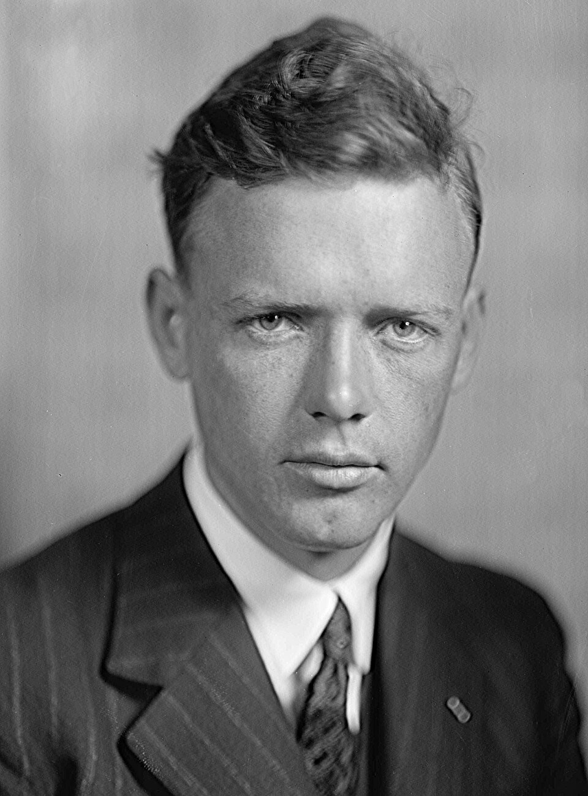

Lindbergh aterriza en Le Bourget: treinta y tres horas solo sobre el Atlántico
El aviador americano de veinticinco años posó su monoplano Espíritu de San Luis ante cien mil personas que desbordaron el aeródromo y casi lo desarman de entusiasmo. Salió de Nueva York con cinco sándwiches y sin radio; llega convertido en el hombre más famoso del mundo.

A las diez y veintidós de esta noche, un monoplano plateado surgió de la oscuridad sobre el aeródromo de Le Bourget, dio dos vueltas sobre el campo iluminado por los faros de miles de automóviles y se posó con la suavidad de quien vuelve de un paseo. Adentro venía un solo hombre: Charles Lindbergh, veinticinco años, que había despegado de Nueva York hacía treinta y tres horas y media. La multitud —cien mil almas, calculan— arrolló las barreras y los cordones de tropa, arrancó telas del aparato a modo de reliquias y paseó en andas al piloto, aturdido, hasta que dos aviadores franceses lograron ponerlo a salvo. Llevaba más de dos días sin dormir.
La hazaña tiene su lista de mártires, y esta noche nadie en Francia la olvida: el premio de veinticinco mil dólares ofrecido por el hotelero Orteig a la primera travesía Nueva York-París sin escalas lleva años cobrándose vidas. Hace apenas dos semanas partieron de este mismo campo, rumbo al oeste, Nungesser y Coli en su Pájaro Blanco; el mar no los ha devuelto, y la ciudad que hoy vitorea al americano guarda a sus dos aviadores un silencio doloroso. Otros murieron en pruebas o cayeron al despegar con sus pesados trimotores. Lindbergh eligió el camino contrario en todo: un solo motor, un solo hombre, y nada a bordo que no fuera indispensable.
El personaje parece escrito para la leyenda: piloto del correo aéreo entre San Luis y Chicago, acostumbrado a saltar en paracaídas de aviones vencidos por la niebla, convenció a un puñado de comerciantes de San Luis de financiar un aparato construido a su idea en sesenta días. El Espíritu de San Luis no lleva radio, ni sextante, ni paracaídas, ni siquiera parabrisas: el tanque de nafta va delante de la cabina y el piloto mira por un periscopio o de costado. Como provisión, cinco sándwiches. «Si llego a París no necesitaré más; y si no llego, tampoco», habría dicho antes de partir, con el humor seco que ya recorre dos continentes.
La travesía fue una batalla de treinta y tres horas contra la niebla, el hielo en las alas y el sueño, el peor de los enemigos: voló por momentos a pocos metros de las olas para despabilarse con el rocío, y confesó a sus rescatadores que hubo horas en que no sabía si soñaba. Navegó por estima, con brújula y reloj, y su cuenta resultó de una exactitud pasmosa: avistó Irlanda a pocas millas de la ruta trazada. Cuentan que descendió sobre unas barcas pesqueras y gritó desde la carlinga, sin obtener respuesta, por dónde se iba a Irlanda. Al reconocer las luces de París, dice, dudó de que fueran reales.
Hace veinticuatro años este diario contó, ante cinco testigos, los doce segundos de Kitty Hawk; esta noche un océano entero cabe entre un despegue y un aterrizaje, y la multitud que se llevó jirones de tela entendió antes que las cancillerías lo que eso significa. El piloto de correo de ayer es el héroe del mundo de hoy: embajador involuntario de una nación a la que Francia abraza esta noche olvidando viejas cuentas. Los técnicos discutirán si la travesía solitaria fue hazaña o imprudencia coronada; el público ya votó. Los continentes acaban de acercarse varios días de navegación, y el siglo, que aprendió a volar en un médano, empieza a quedarse sin distancias.